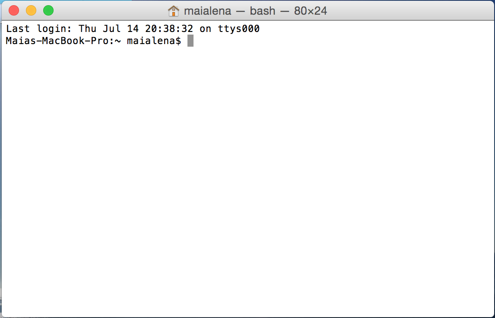
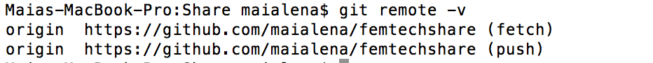

Week1: Introductions & Setup

Welcome to FemTECH Share! The purpose of this series is to teach you the basics of HTML5, CSS, and JavaScript so that you can build your own website in just 10 weeks. If you've wanted to learn programming but didn't know where to start, this is a great jumping off point into the world of web development. We'll begin each week by sharing a cool video, article, or 'hot topic' in the tech world -- something to get inspired by. We'll likely open the floor up to a brief discussion and check-in, and then dive straight into the lab.
In the beginning, the labs will be made up of equal parts instruction and self-paced exercises. As we progress throughout the semester, however, instruction time will decrease and self-paced-learning time will increase. By the end, you'll be leading yourself (and each other) as you learn new tricks and choose the projects that most interest you.
While you'll pick up programming skills by the end of this series, that's certaintly not the sole purpose. Beyond the technical know-how, we also hope you'll leave with more confidence, research skills, and support to dive as deep into the world of web development (and programming) as you'd like after the semester is through.
But before we jump in, let's answer a basic question that's at the core of anything web-related: what exactly is the internet? Though you don't need to understand what the internet is to develop a website, let alone use one, you'll have way more street cred if you do ;) So let's watch this awesome video to get oriented.
Now onto the meat and potatoes: setting up our work environment.
- Navigate directories from the command line
- Understand GitHub & set up work environment
- Sign up for EdX "HTML, CSS, javaScript online course" (free)
This is the interface that you use to directly communicate with the operating system via text-based commands (which are then converted into a language that the computer understands). Other names for the 'terminal' include:
- Shell
- Console
- Command line
- Command prompt
To get started, simply search for "Terminal" (probably in your 'Applications'). If you'd like to read more about the terminal, check out the Ubuntu documentation here
Now that we've got the terminal open, we’re going to learn how to create, move, and organize directories from the command line. First, some important commands:
- Move into or out of a directory:
$ cd [path/to/file]”:
$ mkdir [name]
$ ls
$ mv [from_path] [to_path]”
If these commands don’t make sense right now, it’s okay. We’re going to get some practice using the command line below.
- Open up the Terminal and type “ls.” You should see something like this. The '~' indicates that you are currently in your home directory: 
- Now move into your Desktop:
$ cd Desktop
$ ls
$ mkdir [name]
$ cd [name]
$ vim [name].txt
We're going to create all the subdirectories we will need to build a website. There are a few conventions that website developers use, so we'll start by learning them.
- First, open your terminal and $ cd into your main directory
- Let's create some folders! We'll need a HTML, CSS, images, & JS (javaScript) directories for now. Do you remember the UNIX command for making directories?
- In your root directory (the one that contains all sub-directories), make a new index.html file
- $ cd into your CSS directory, and make a new style.html file
Why are the main files called "index.html" and "style.css"? No particular reason. It's just the convention that Web Developers use.
Now we're ready to code!
- Open up VisualStudioCode text editor. Download it here if you don't have it set up yet.
- We'll walk through the basics of a markup page together on the board in class. If you miss class, or want a refresher later on, use this resource to get started.
Github is a Version Control System that allows you to save drafts as you go to remote server. Think of it as a backup file system, like the Cloud, or even better, as a tool that's analogous to the "Save As" option in Word. By recording all your changes as you go, you can always go back to earlier versions of your code if you want to scrap recent edits.
Github is used in industry by teams, so that people working on the same project can edit local versions of the code without overriding each other's work. Team members can work separately on their own local copies of the code, or they can merge together their work so that everyone is on the same page.
If you want to learn more about GitHub (or Version Control in general), I highly recommend you check out these resources:
It's time to make an account. Github has an awesome deal for students: an unlimited number of free repositories (folders) for projects. Get the pack here.
Time to make your first repository.
- Create a repository (private or public, it's up to you -- you can change the status at any time) called “FEMTechShare”
- Open your terminal and navigate to the directory you made for FemTech.
- Initialize Git. This command is used to create an empty Git repository. It creates a .git folder that allows you to start recording revisions of your files.
- Test that the .git folder is in your directory with the "ls" command
- Open your repository on GitHub and click the "Clone or download" button to left. Copy the code
- From the terminal, type the following to connect your local repo with your Git repo:
- Double check that you've cloned your remote repo correctly
- You should see something like this 
- Tada! That's it.
$ git init
$ git clone [paste url]
$ git remote -v
Finally, let's learn the basic commands with another tutorial
Last but not least, we’re going to be using the FREE online course: “HTML5 Introduction.” This is a great introduction to the material we’ll be covering this term. It will be really helpful if you try to complete one section per week so that you can come to Share with questions.
Sign up for the course here
- EdX Module 1: “Creating Web Pages using Hypertext Markup Language (HTML)”
- (optional): Next week we're going to start designing our websites. Get a head start with designbombs.com to read up on things to think about when choosing colors, fonts, styles (and more) for your website.
- (optional) Fast forward to 1:45 (the first part is kinda boring -- if you can speed up the video in general, you might want to) and watch Start From Scratch: Part 1 - HTML NOTE: we're going to do something similar to this in Week 2, so if you want a head start, check it out!)